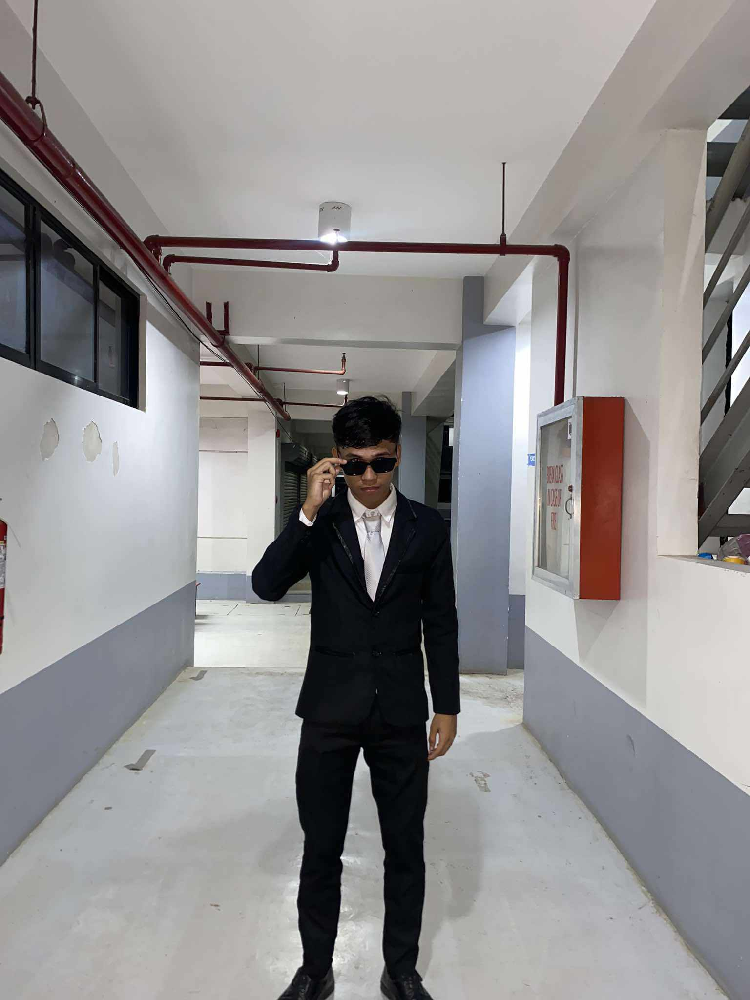
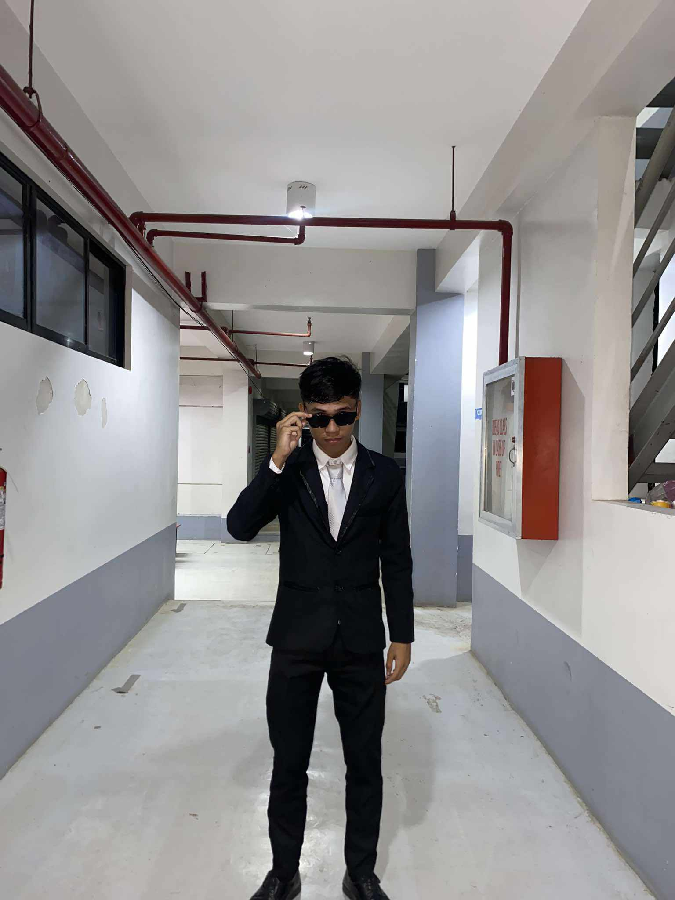

EARLY 2024
I entered my 3rd year of college, filled with excitement and new experiences. I chose to study Computer Engineering because of my deep interest in computers.
MID 2024
My first semester was a challenge, with stressful exams and countless assignments. I learned to manage my time and ask for help when needed.
Lesson Learned
Managing stress and staying adaptable is key to success.
END OF 2024
I've grown into a more confident student, ready to take on the world. College is not just about academics but also about self-discovery.
CHALLENGES & STRUGGLES
Balancing academics, social life, and personal growth wasn't easy. I often found myself overwhelmed with deadlines and exams. However, I developed better time management skills and a disciplined routine that helped me stay on track.
 
